Fala o que fazer
O app lê cada tela em voz alta e entende respostas faladas, como "já tomei".
O BULA lê a caixa do remédio, explica para que serve em palavras simples, avisa a hora de tomar e mostra onde pegar de graça no Recife. Feito para quem tem baixa visão ou pouca leitura, e para a família que cuida.
O vídeo tem legenda na tela. Toque no play para ouvir com som.
Quantas pessoas precisam amassar caixas ou riscar frascos com caneta só para conseguir seguir o próprio tratamento?
dos consumidores com 60 anos ou mais têm dificuldade para ler bulas e embalagens.
dos pacientes atendidos pelo sistema têm algum problema relacionado a medicamentos.
desses casos são considerados evitáveis.
por ano é o custo estimado para o Brasil. Cerca de 75% vem de internações.
Fontes: Pesquisa Comportamento do Consumidor em Farmácias 2026 (IFEPEC/FEBRAFAR); Drug-Related Morbidity in Brazil: A Cost-of-Illness Model (2018), estimativa por modelo de simulação na perspectiva do sistema público (faixa de US$ 9 a 27 bilhões por ano).
Cada tela pode ser ouvida. Quem não lê consegue usar só falando.
O app lê cada tela em voz alta e entende respostas faladas, como "já tomei".
A câmera lê o código de barras e diz o nome e para que serve, segundo a bula oficial da Anvisa.
Quem cuida recebe aviso de dose atrasada e o resumo da semana, sem precisar estar junto.
Alarme com som próprio na hora certa, o nome do remédio em letras grandes e um botão TOMEI.
Mostra a Farmácia Popular mais perto e o estoque dos postos de saúde do Recife, pelos dados abertos da Prefeitura.
Telas reais do app, na ordem em que a pessoa usa.
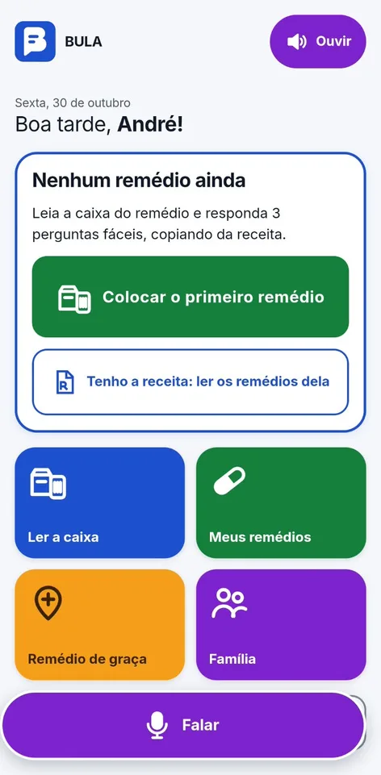
Quatro botões grandes e o botão Falar sempre embaixo.
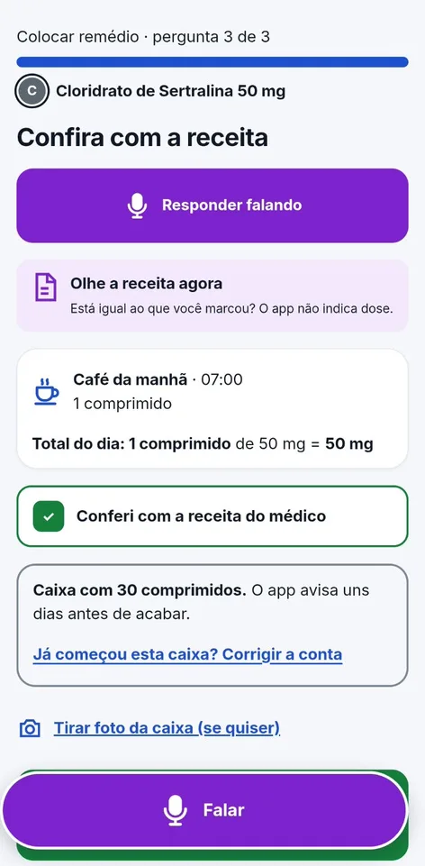
Leu a caixa, responde três perguntas copiando da receita. O app não indica dose.
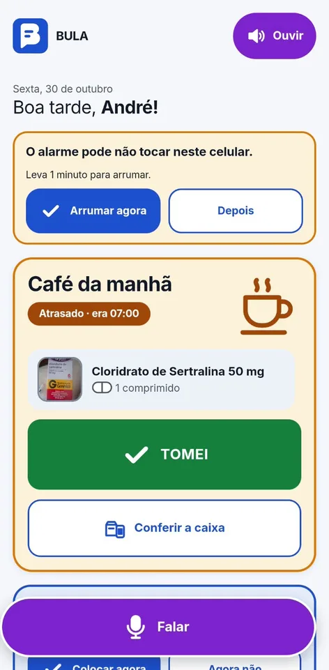
A tela de hoje mostra o que tomar agora, com foto da caixa e o botão TOMEI.
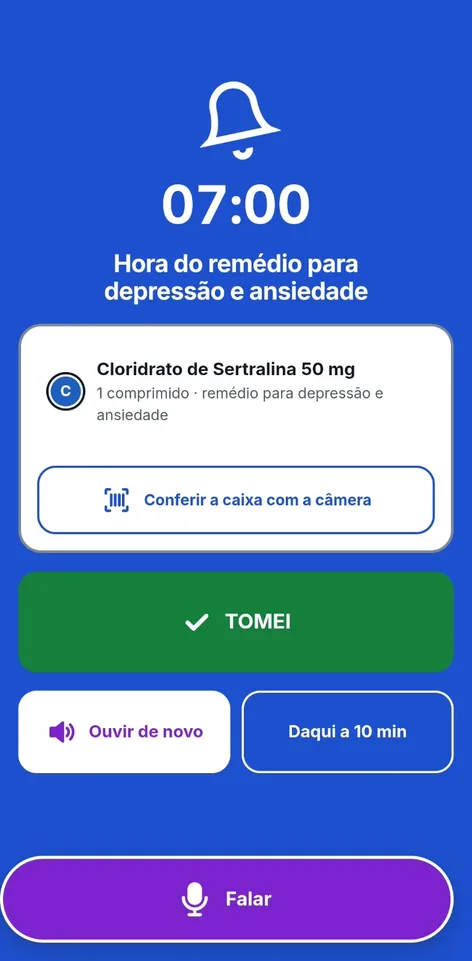
Toca com o som do BULA e fala o nome do remédio. Dá para conferir a caixa com a câmera.
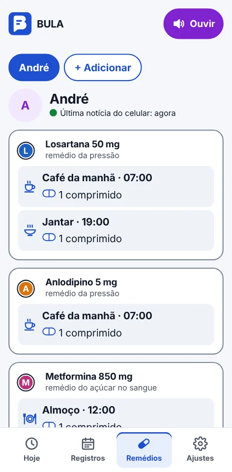
Coloca ou muda remédios à distância e vê quando a caixa vai acabar.
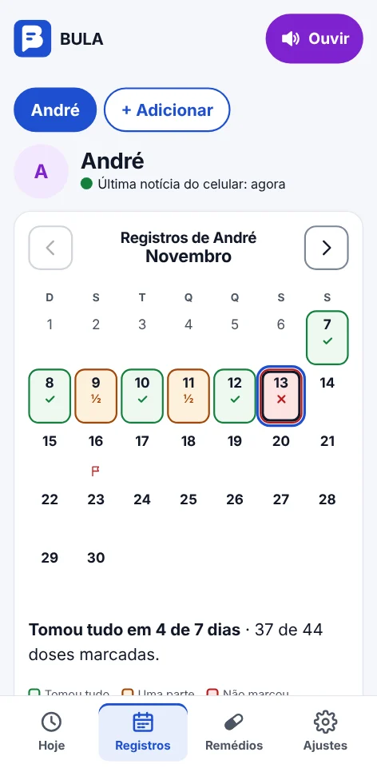
Cada dia mostra as doses marcadas e as que faltaram.
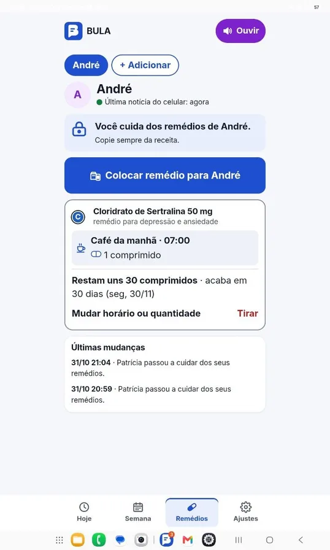
Se passar do horário, aparece o aviso com ligar ou lembrar no celular da pessoa.
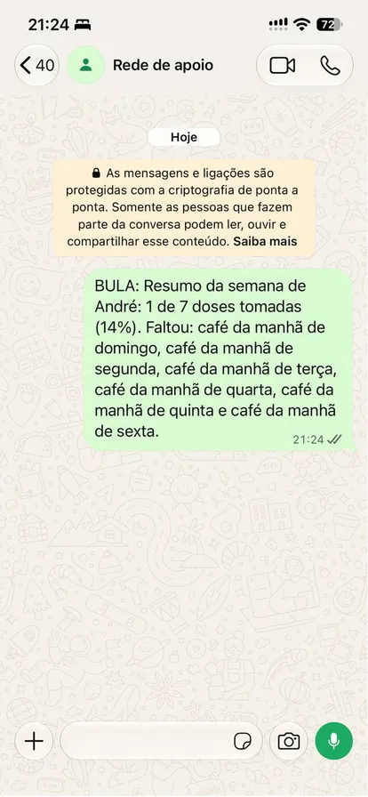
O resumo da semana vai pelo WhatsApp para quem também ajuda.
Pessoa idosa com limitação visual, que tem dificuldade com telas e textos sobre remédios.
Ajuda um familiar a organizar os remédios e acompanha à distância.
Quer organizar a própria medicação com segurança e encaixar o tratamento na rotina.
Comparação com os apps de lembrete de remédio mais usados no Brasil.
| Recurso | BULA | Medisafe | MeuMedicamento | MedTimer | Meu SUS Digital | Apps de saúde do celular |
|---|
Quem toma o remédio e quem cuida nunca pagam. Paga quem economiza quando a pessoa toma o remédio certo, na hora certa.
A lista oficial da Anvisa vale para todo o país: mais de 27 mil códigos de barras já vêm dentro do app.
Funciona sem internet e sem servidor guardando dados de saúde. Cada pessoa nova quase não aumenta o custo.
Só farmácias e postos são locais. Vêm do mapa aberto, da lista nacional da Farmácia Popular e dos dados abertos de cada prefeitura.
Parceria pelo Contrato Público para Solução Inovadora (CPSI), depois por assinatura.
Acesso gratuito à população atendida pela rede pública de saúde.
Nova fonte de receita por parcerias comerciais.
Sem propaganda de remédio: o destaque é da farmácia, nunca do medicamento, e nunca aparece na bula. O que a pessoa toma não é usado para escolher anúncio.
Remédios e horários ficam guardados no próprio aparelho, criptografados. Não tem cadastro.
O acompanhamento só começa quando a pessoa conecta o celular de alguém. A conversa vai com criptografia de ponta a ponta.
O BULA lembra, explica e confere. Não indica nem muda dose e não substitui o médico ou o farmacêutico.
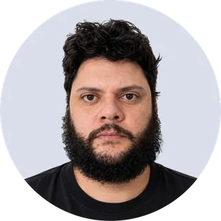
Guilherme de Oliveira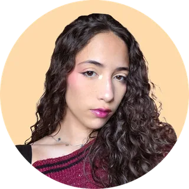
Isabelly Damazio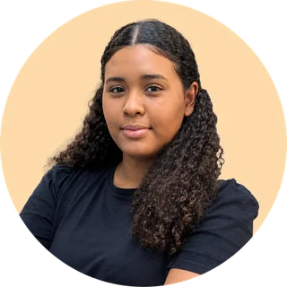
Julia Albuquerque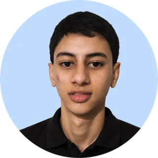
Kaio Santiago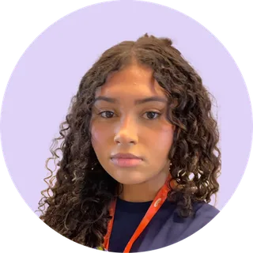
Laura Betina